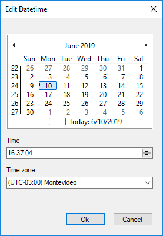

Timer Start Event in BPD
The Timer Start Event (Trigger property set to 'Timer') allows setting a specific date and time to start the process instance or even a cycle of executions of new process instances. SymbolDescriptionThis event indicates a specific date and time for the process instance to start, or a cycle for recurring executions. You can configure those date and times at design time or at runtime. PropertiesTimer DefinitionPossible values:
Timer Expression TypePossible values:
Timer DateVisible if Timer Definition property is set to 'Date' and Timer expression type property is set to 'Rule' Allows setting a fixed starting date and time to start the process instance.  Timer CycleVisible if Timer Definition property is set to 'Cycle' and Timer expression type property is set to 'Rule'. Allows setting a start date and time and information related to the repetitions and its cadence.
Date Expression ProcedureVisible if Timer Expression Type is set to 'Procedure'. Allows setting a procedure that returns a date and time (DateTime data type) with the next time the event has to start. If Timer definition property is set to 'Date', then this procedure is called just once; if Timer Definition property is set to Cycle, then the procedure is called again after the timer is triggered. If it returns an already past date and time, then no instance will be started anymore. Note: In order to see the Timer Events reflected in your inbox, you must run a program that checks and executes these events. See Timer Control for more information. See AlsoTimer Intermediate Event in BPD |

| Backlinks | ||
| Toc:GeneXus 16 BPM Suite | Timer Control | Timer Intermediate Event in BPD |